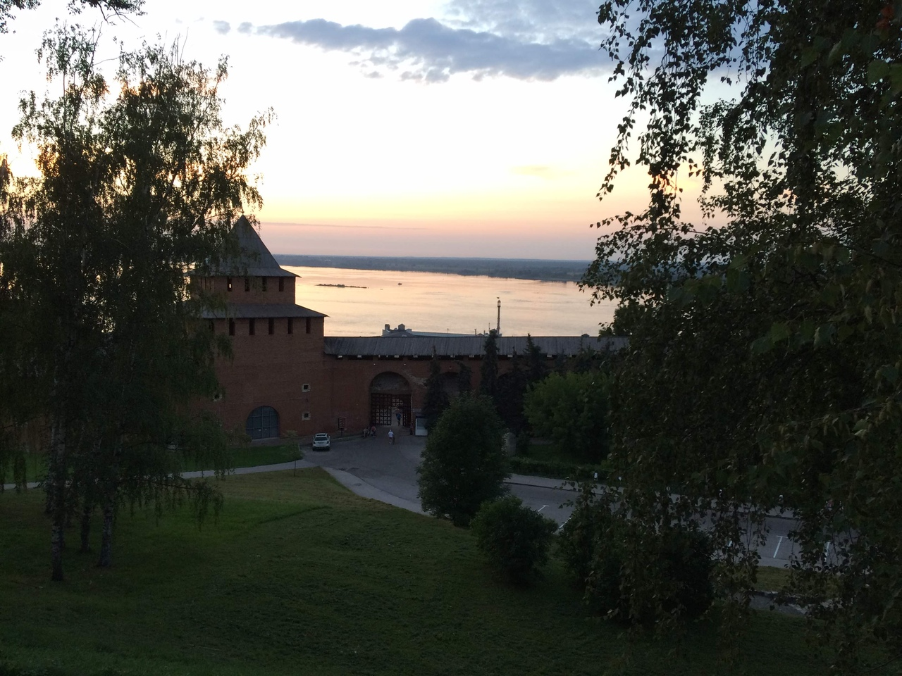

NIZHNY NOVGOROD

As a great lover of history, I have always wanted to get to Nizhny Novgorod. In Nizhny Novgorod, you can find hundreds of historical monuments, each of which will be even more beautiful and unique than the previous one. A red brick Kremlin, stone cathedrals, a modern planetarium, medieval monasteries, a hyperboloid tower ... It seems that Nizhny Novgorod has mixed cultures, eras and technologies, miraculously forming a harmonious and inviting urban landscape.